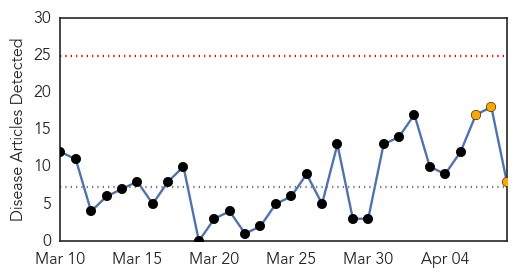

30 Day Trends
Web: 0 alerts, 3 warnings
Twitter: 0 alerts, 0 warnings
Top Articles:
- 0.987
- Measles Cases Around US Spark Concerns of a Comeback
- 0.896
- Heath Officials Warn Bay Area Residents To Get The Measles Vaccine Before Traveling Overseas
- 0.839
- UC Berkeley student has measles, high state numbers
- 0.822
- In US, vaccine denial goes mainstream
- 0.599
- Kings of Leon fans on alert after woman with measles goes to Seattle concert
- 0.599
- Kings of Leon fans on alert after woman with measles goes to Seattle concert
- 0.585
- Measles At A Rock Concert Goes Viral In A Bad Way
- 0.548
- California experiencing big increase in measles cases
Top Tweets:
-
No tweets found for Apr 08, 2014
Web/News Articles
Tweets